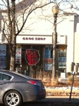
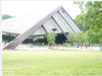
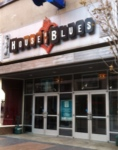

Winter Home of the Cleveland Orchestra
11001 Euclid Avenue
Cleveland, Ohio 44106
Phone:216-231-1111
Cleveland Orchestra
The Cleveland Orchestra was established in 1918. It has had 7 music directors and is currenlty under the direction of Franz Welser-Most. The Orchestra performs at Blossom Music Center during the summer season and at Severance Hall their winter home. The Orchestra has performed at Blossom Music Center since 1968. Severance Hall became its winter home in 1931. The Orchestra has residencies around the world. They are currently performing weekend concerts in Miami as one of its residencies. The Orchestra is involved with many educational and outreach programs that has enriched the lives of over 4 million school children in the Cleveland area. It is known for its high standards of artistic excellence. The Orchestra has toured all over the world and in addition to Miamihas established long term residencies in New York and Vienna. They have a biennial residency in Switzerland at the Lucerne International Festival. Severance Hall, the orchestra's winter home was completed in 1931. It is named after John L. Severence and his wife Elizabeth. Severence Hall underwent a 36 million dollar expansion in 2000. Severence Hall was designed by the architectural firm Walker and Weeks. Elizabeth Severence died unexpectantly before the Hall's completion. Her husband then contributed additional revenue in her memory. The hall includes the main concert hall with additional smaller halls for chamber concerts. Apollo's Fire
See Website for Concert Times and Locations
Apollo's Fire
Apollo's Fire is Cleveland's Baroque Orchestra. It was established in 1992 by harpsichordist and conductor Jeannette Sorrell. Apollo's Fire has toured through North America and Europe. The Orchestra is composed of a collection of musicians with an expertise in period instruments. The Orchestra is customized based on the music it is performing. The Orchestra is named after Apollo the god of music and the sun.  Grog Shop
2785 Euclid Heights Boulevard
Cleveland, Ohio 44106
Phone:216-321-5588
Grog Shop
The Grog Shop was opened in 1992. It was conceptualized by 3 co-workers who worked together at Club Isabella a jazz club in University Circle. The Grog Shop added to the re-vitalization of the Coventry area. At a time when the indie music venue was popular the club established itself as one of Cleveland's best independent music venues. The club moved to its currentl location in 2003 after loosing its lease at the original location.  Blossom Music Center
1145 West Steels Corners Road
Cuyahoga Falls, Ohio 44223
Phone:800-745-3000
Blossom Music Center
Blossom Music Center is the outdoor music theater in Cuyahoga Falls. It is also the summer home to the Cleveland Orchestra. It hosts multiple music festivals each year. It also features an art gallery and garden. Blossom can hold over 19,000 people, 13,500 on the lawn and 5,700 pavilion seats.  House of Blues
308 Euclid Avenue
Cleveland, Ohio 44114
Phone:216-523-2583
House of Blues
The House of Blues has locations not only in Cleveland but in Anaheim, Atlantic City, Boston, Chicago, Dallas, Houston, Las Vegas, Los Angelos, Myrtle Beach, New Orleans, Orlando and San Diego. The first House of Blues opened in 1992 in Cambridge, Massachusettes. Some to the origional owners included: Dan Aykroyd, Aerosmith, Paul Shaffer, the late River Phoenix and John Belushi.